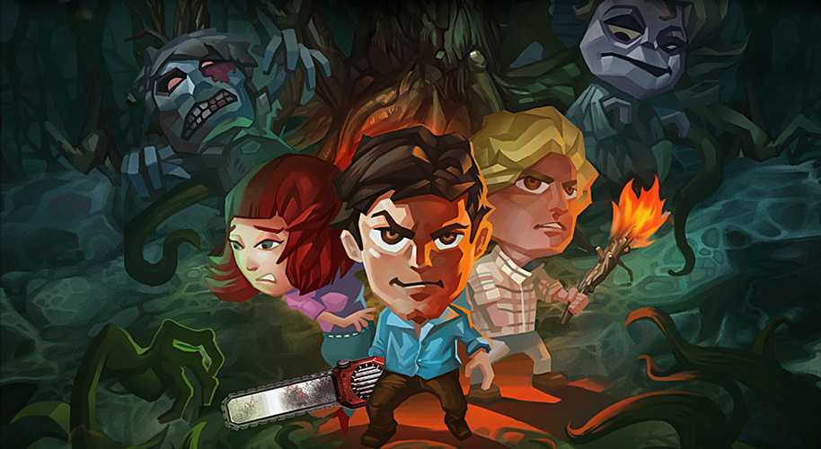

game trailerobjectives
to build an iOS game deployed on iPhone and iPad in conjunction with 30th year anniver- sary of evil dead movie (by sam raimi, the director of the spider-man franchise).
role + responsibilities
creative director and product lead
- led team of designer, illustrators, 3d modelers/animators, engineers and producer over the course of 8+ months development cycle
**deliverables in this role** includes game document (incl. play mechanic, level design, character atributes, etc.), motion script, and early game world sketches.
client
ghost house pictures | usa
deliverables
- first person adventure game with linear storyline spread over two chapters in 30 levels developed using unity 3d engine
- original character design, artworks and game worlds design
- true-to-movie storyline for the first chapter and continued with original storyline spans over the next chapter.
process
agile-led project with daily stand-up and backlog progress using ActiveCollab as project management tool across the team.
tools
unity 3D, autodesk maya, adobe creative suits, activecollab project management tool, Test Flight and GitHub repository.
. . . . .
#trigger, #shanghai, #losangeles, #videogames, iOS, #creativedirection
. . . . .